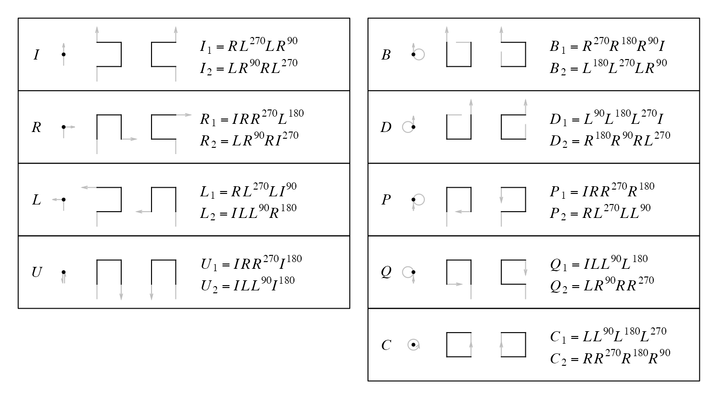
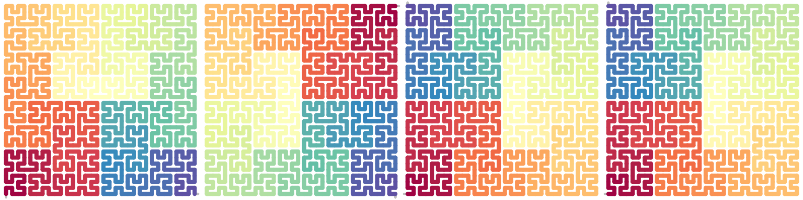
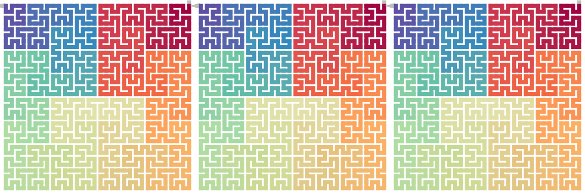
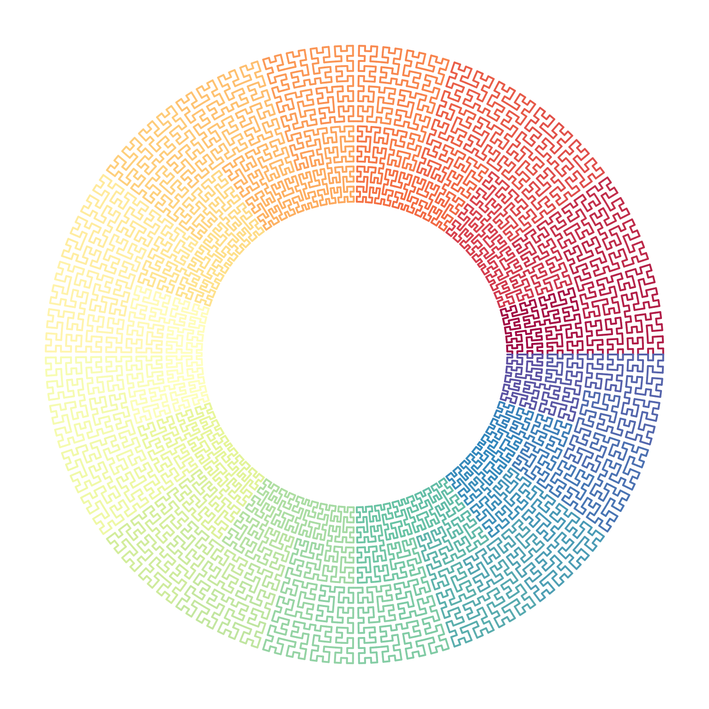

Generalized Hilbert Curve
Zuguang Gu (z.gu@dkfz.de)
2024-08-05
Source:vignettes/hilbert_curve.Rmd
hilbert_curve.RmdWe consider the type of space-filling curve that has a 2x2 growth rate. The growth of the curve can be described in a top-bottom manner, where within a square with fixed size (normally a unit square), the square is partitioned into four sub-squares by equally splitting it into two halves both horizontally and vertically. Then on each sub-square, such partitioning is applied recursively. It can also be described in a bottom-top manner, where with a unit square expands into four squares by duplicating itself both on rows and columns, then each of the four squares expands itself recursively. It is easy to see, the two ways are identical only with a size factor \(n\) (the edge of the square) or \(n^2\) (the area).
For easy discussion, we use the expansion mode. When expanding one square to four squares (2x2), there are several ways, such as the z-curve or H-curve. Here we require the curve only goes straight, left or right along the four squares without interuptted or crossed.
The following three plots demonstrate the three steps of the expansion which are \(2^0 \times 2^0\) (level 0), \(2^1 \times 2^1\) (level 1) and \(2^2 \times 2^2\) (level 2).
Base patterns
The space-filling curve can be generated by recursively repeating certain patterns on its sub-structures. Thus, we define the following expansion rules from level 0 to level 1. The patterns on level 0 are called the base patterns which contains a single points and its in-direction and out-direction.

For example, base pattern \(I\) is on level 0, explicitly denoted as \(I^{(0)}\). When it expands to level 1 while keeping the direction of the curve, there are two options as listed in the diagram. As an example here, we choose the first option. Now for the following expansion:
\[ I^{(0)} \rightarrow I^{(1)}_1 \]
we can describe the curve generation in four steps:
- step 1. bottom in, right out. This is the base pattern \(R\) without rotation, thus we denote it as \(R^{(0)}\),
- step 2. left in, top out. This is the base pattern \(L\) with -90 degrees clockwise rotation, thus we denote it as \(L^{(0),-90}\) or \(L^{(0),270}\),
- step 3. bottom in, left out. This is the base pattern \(L\) without rotation, and we denote it as \(L^{(0)}\),
- step 4. right in, top out. This step can be denoted as \(R^{(0),90}\).
Then the expansion can be written as a sequence of four base patterns:
\[ I^{(1)}_1 = R^{(0)}L^{(0),90}L^{(0)}R^{(0),270} \]
With knowing the in-direction and out-direction of base patterns, the shape of \(I^{(1)}_1\) can be determined. In the diagram, the notation of levels are removed since it can be easily identified.
\[ I_1 = RL^{90}LR^{270} \]
The base pattern defines the out-direction which determines the location of the next point, thus, as long as the “actions” of the base patterns in a sequence is known (i.e. going left or right), the form of the sequence is fixed. In other words, only the rotation of the first base pattern determines the final form of the sequence and once it is fixed, the rotations of the remaining base patterns are all fixed and they can be automatically calculated. However we still explicitly add the rotations to all base patterns (except those with rotations of zero) since we also need to deal with segments of curves in the package.
In later sections or other vignettes, we sometimes also call base patterns to base letters for convinience.
Rotate
We set the rotation of all base patterns with the shapes listed in the diagram to zero (i.e. the base state. Of course it is only for convinience). We can easily define the rotation of a base pattern or a sequence of base patterns.
Denote \(X^\theta\) as a base pattern where \(X \in \{I, R, L, U, B, D, P, Q, C\}\), and \(\theta\) is the rotation regarding to the base state in the diagram, \(\theta \in \{0, 90, 180, 270\}\) and a positive \(\theta\) corresponds to reverse clockwise rotation, we have
\[ (X^{\theta_1})^{\theta_2} = X^{\theta_1 + \theta_2} \]
which means rotating the pattern twice is identical to rotating the pattern once but with the sum of the two rotations.
Note
\[ X^\theta = X^{\theta \bmod 360} \]
Rotating a sequence of base patterns is identical to rotating individual base patterns in a sequence.
\[ (X_1^{\theta_1}X_2^{\theta_2}...X_n^{\theta_n})^\theta = X_1^{(\theta_1 + \theta)}X_2^{(\theta_2 + \theta)} ... X_n^{(\theta_n + \theta)} \]
By also including all four rotations of the base patterns, the diagram contains the complete set of expansions from level 0 to level 1 for the 2x2 curve.
Expand the curve
The diagram only defines the expansion of the curve from level 0 to level 1 (the 0-to-1 expansion), but that is already enough for generating a curve to level k. For simplicity, we take a curve initialized by a single base pattern as an example. The expansion process can be described as in the following steps:
- level 0 -> level 1, \(P_1 = (X_i)_4\). This generates a level 1 curve with 4 base patterns.
- level 1 -> level 2, \(P_2 = (X_i)_{16}\). For each base pattern in \(P_1\), we replace it with its level 1 expansion. This generates a curve with \(4^2\) base patterns.
- level k-1 -> level k, \(P_k = (X_i)_{4^k}\). Note the curve on level k-1 \(P_{k-1}\) is already represented as a sequence of \(4^{k-1}\) base patterns. Then for each base pattern in \(P_{k-1}\), we replace it with its level 1 expansion. This generates a curve with \(4^k\) base patterns.
where \(P_i\) is the curve or unit on level i. We can see, to expand a curve to level k step by step, we only need to use the expansions from level 0 to level 1.
One problem arises when expanding a base pattern to its level unit. As shown in the diagram, in the expansion from level 0 to level 1, each base pattern has two types of expansion, thus we need a criterion to select the proper one to make sure all the points are correctedly connected on the final curve.
In the first step where a single base pattern expands to four base patterns, the level 1 unit can be ensured to be connected. However, in the second step where four base patterns expand to 16 base patterns, i.e. from level 1 to level 2, we need to make sure the 16 base patterns are connected in the corrected way, i.e. straight, left and right.
Let’s rewrite \(P_1\) as a sequence of four base patterns:
\[ P_1 = X_1 X_2 X_3 X_4 \]
When e.g. the base pattern \(X_1\) expands to level 1 denoted as \(X^{(1)}_{<i>,1}\) (\(i=1\) or \(i=2\)), then \(P_2\) is:
\[ P_2 = X^{(1)}_{<i_1>,1} X^{(1)}_{<i_2>,2} X^{(1)}_{<i_3>,3} X^{(1)}_{<i_4>,4} \]
The four \(X^{(1)}_{<i>,1}\) represents as four 2x2 grids. We need a criterion for selecting \(i\) for each level 1 unit to make sure all the level 1 units on the curve are properly connected.
A curve on level k contains \(4^{k-1}\) 2x2 units expanded from the curve on level k-1. Thus, the successful method can ensure all the \(4^{k-1}\) 2x2 units are properly connected and makes the final curve in the correct form.
Corners
All the level 1 units transverse through a \(2 \times 2\) grids, thus they all have a square-shape with an in-direction and an out-direction. Denote the bottom left and top right have a value of 1 and the top left and bottom right have a value of 2:

We define the corner value \(\tau\) of the level 1 unit \(X^{(1)}\) as a 2-tuple \((c_1, c_2)\) where \(c_1\) is the value of the entering corner and \(c_2\) is the value of the leaving corner of \(X^{(1)}\):
\[ \tau_{X^{(1)}} = (c_1, c_2), \quad c_1, c_2 \in \{1, 2\} \]
In the diagram, for all the 2x2 unit defined there, either \(\tau_{X^{(1)}} = (1, 2)\) or \(\tau_{X^{(1)}} = (2, 1)\). We define the complement of \(c\) as
\[ \hat{c} = \left\{\begin{matrix} 2 & \text{if }c = 1,\\ 1 & \text{if }c = 2,\\ \end{matrix}\right. \]
Rotating \(X^{(1)}\) by 90 degrees (or its multiples, either clockwise or reverse clockwise) changes the order of the two values in the tuple, while rotating by 180 degrees (or its multiples) does not.
\[ \begin{align*} \tau_{X^{(1), 90k}} &= (c_1, c_2) & \text{if }k\text{ is even}, \\ \tau_{X^{(1), 90k}} &= (\hat{c}_1, \hat{c}_2) & \text{if }k\text{ is odd}, \\ \end{align*} \]
Let’s go back to the diagram. For each base pattern, there are two level 1 units that can be expanded to. We code the two level 1 units according to their corner values as follows for convinience:
\[ \begin{align*} X_{<1>}^{(1)} \quad \text{if }\tau_{X^{(1)}} &= (1, 2), \\ X_{<2>}^{(1)} \quad \text{if }\tau_{X^{(1)}} &= (2, 1). \\ \end{align*} \]
\(<1>\) and \(<2>\) are called the expansion code of base pattern \(X\).
Connect patterns
For two level 1 units \(X^{(1)}\) and \(Y^{(1)}\) with corners \((c_1, c_2)\) and \((c_3, c_4)\) (of course \(c_2 = \hat{c_1}\), \(c_4 = \hat{c_3}\)), to construct the sequence \(XY\), we need to ensure the two units are connectable. Since the two units represented as two square patterns can only be connected horizontally or vertically, it should fit \(c_2 = \hat{c_3}\), i.e. with the forms of \(\tau_{X^{(1)}} = (1, 2), \tau_{y^{(1)}} = (1,2)\) or \(\tau_{X^{(1)}} = (2, 1), \tau_{y^{(1)}} = (2,1)\). It is easy to see, we can apply it to a sequence with any length. For for short, the corner values of all base patterns in the sequence should be the same.
Next Let’s extend it to base patterns with rotations. Denote two level 1 units \(X^{(1),\alpha} Y^{(1),\beta}\), we first assign an expansion code \(i\) to the first unit, say \(X_{<i>}^{(1),\alpha}\) (\(i \in \{1,2\}\)), and we define the complement expansion code \(j\) as:
\[ j = \left\{\begin{matrix} 1 & \text{if }i = 2,\\ 2 & \text{if }i = 1.\\ \end{matrix}\right. \]
then the expansion code for \(Y^{(1),\beta}\) is determined by \(k = (\beta - \alpha)/90\):
\[ \left\{\begin{matrix} Y^{(1),\beta}_{<i>}, & \text{if }k\text{ is even}, \\ Y^{(1),\beta}_{<j>}, & \text{if }k\text{ is odd}. \\ \end{matrix}\right. \]
which means if \(\beta-\alpha\) is the even multiples of 90 degrees, \(Y^{(1),\beta}\) has the same expansion code as \(X^{(1),\alpha}\); if \(\beta-\alpha\) is the odd multiples of 90 degrees, \(Y^{(1),\beta}\) has the complement code of \(X^{(1),\alpha}\).
so for example, starting from \(I^{90}\), to extend it, we choose \(I_1^{90}\) with the level 1 form
\[ P_1 = I_1^{90} = (RL^{90}LR^{270})^{90} = R^{90}L^{180}L^{90}R \]
To extend to level 2, we have to assign the expansion code to each of the \(RLRL\). We start from the first pattern \(R\), as there are two options, we use \(R_1\) (here we write \(R_{<1>}^{(1)}\) as \(R_1\) for simplicity), then according to the rules defined befoe, we can assign the expansion codes to the four base patterns:
\[ P_2 = R_1^{90}L_2^{180}L_1^{90}R_2 \]
then by extending to level 0, we can obtain the final sequence of base patterns for a level 2 curve:
\[ \begin{align*} P_2 &= (IRR^{90}L^{180})^{90}(ILL^{270}R^{180})^{180}(RL^{90}LI^{270})^{90}(LR^{270}RI^{90}) \\ &= I^{90}R^{90}R^{180}L^{270}I^{180}L^{180}L^{90}RR^{90}L^{180}L^{90}ILR^{270}RI^{90} \\ \end{align*} \]
By the way, the rotations from the second base pattern in the sequence can be automatically calculated from the first base pattern.
When expanding a curve from level k-1 to level k, on level k-1, we only need to pre-select the transverse code for the first base pattern, then the transverse code for the remainingbase patterns on level k-1 is determined, which ensures the expanded \(4^{k-1}\) 2x2 units are all connected.
Finally, the sequence of the transverse code for each base unit in the expansion is called the transverse path. E.g. the two different transverse paths of the \(R_1\) 2x2 unit, determined by the expansion code of the first base pattern:
plot_transverse_paths(SFC_RULES_HILBERT, SFC_RULES_HILBERT@rules$R[[1]])The two transverse paths can be written as:
\[ \begin{align*} \mathcal{p}_1 &= (1, 1, 2, 1) \\ \mathcal{p}_2 &= (2, 2, 1, 2) \\ \end{align*} \]
Encode the curve
Let’s start from a single base pattern as the initial seed. As has been explained, on each level of expansion, an expansion code should be selected for the first base pattern to determine the transverse path of the whole sequence. Then the possible expansions from a single base pattern can be described in the following diagram.

So, on level k, the total number of different forms of the 2x2 curve are \(2^k\) because on each level there are two transverse paths to select. Taking \(R\) as the initial seed, the size of the full set of level-3 curves are 8:
Note the orientation of \(R\) is bottom in and right out.
draw_multiple_curves(
sfc_hilbert("R", code = "111"),
sfc_hilbert("R", code = "112"),
sfc_hilbert("R", code = "121"),
sfc_hilbert("R", code = "122"),
sfc_hilbert("R", code = "211"),
sfc_hilbert("R", code = "212"),
sfc_hilbert("R", code = "221"),
sfc_hilbert("R", code = "222"),
nrow = 2, title = TRUE)
Then, with knowing the intial seed and the expansion code (the first base pattern) on each step, the curve is fully determined. Then we can describe a \(2^k \times 2^k\) curve denoted as \(\mathcal{C}_k\) as:
\[ \mathcal{C}_k := X^{(0),\theta}|\pi_1 \pi_2 ... \pi_k \quad \pi_i \in \{1, 2\},\theta \in \{0,90,180,270\} \]
where in the expansion code sequence, if the code is more to the left, it corresponds more to the top-level of the curve, and if the code is more to the right of the sequence, it corresponds more to the bottom-level of the curve.
Note the sequence \((\pi_1 \pi_2, ..., \pi_k)\) can be represented as a sequence of binary bits, so the sequence of the expansion code on each level can also be described as an integer:
\[ X|111 = X|0_3 \\ X|121 = X|2_3 \\ X|222 = X|7_3 \]
A specific base pattern can induce \(2^k\) different forms of curves on level \(k\), so the total number of the forms for all 9 base patterns with 4 rotations are
\[ 4 \times 9 \times 2^k = 36 \times 2^k \]
Specific forms
The Hilbert curve, the Moore curve and the \(\beta-\Omega\) curve are just special forms of the 2x2 curve. They have special expansion code sequences and seed base patterns.
p1 = sfc_hilbert("I", code = "111", rot = -90)
p2 = sfc_hilbert("U", code = "211", rot = 180)
p3 = sfc_hilbert("C", code = "2121", rot = -90)
draw_multiple_curves(p1, p2, p3,
title = c("Hilbert", "Moore", "Beta-Omega"))
In the sequence of type code on levels:
\[ \pi_1, \pi_2, ..., \pi_{k-1}, \pi_{k} \]
particularlly, the last two type codes which construct the unit of 4x4 is the most observable unit in the curve. If we define the following shape as the basic units of Hilbert curve, i.e. the Hilbert units:
draw_multiple_curves(
sfc_hilbert("R", "11"),
sfc_hilbert("R", "22"),
extend = FALSE)
then we can define the “general Hilbert curve” \(\mathcal{H}_k\) as:
\[ \mathcal{H}_k := X^{\theta}|\pi_1 \pi_2 ... \pi_{k_-1} \pi_k \quad X \in \{I, R, L, U\}, \pi_{k-1} = \pi_k \]
We can also define the \(\beta\) unit and the \(\Omega\) unit as the following two:
draw_multiple_curves(
sfc_hilbert("L", "21"),
sfc_hilbert("I", "12", rot = -90)
)The the genral “\(\beta-\Omega\) curve” \(\mathcal{B}_k\) (k >= 3) is defined as:
\[ \mathcal{B}_k := C^{\theta}|\pi_1 \pi_2 ... \pi_{k_-1}, \pi_k \quad \pi_{k-1} \ne \pi_k \]
Last the “general Moore curve” \(\mathcal{M}_k\) is defined as:
\[ \mathcal{M}_k := U^{\theta}|\pi_1 \pi_2 ... \pi_{k_-1}, \pi_k \quad \pi_1 \ne \pi_2, \pi_2 = \pi_3 = ... = \pi_k \]
Combinations of the expansion codes
Let’s go back to the sequence of a curve on level k
\[ \mathcal{C}_k = X^{(0)}|\pi_1 \pi_2 ... \pi_k \]
The equation represents the curve starting from \(X^{(0)}\) and expands k times. We can merge \(X^{(0)}\) and the first expansion to form a new initial seed, and expand the curve k-1 times, written as:
\[ \begin{align*} \mathcal{C}_k &= (X^{(0)}|\pi_1) | \pi_2 ... \pi_k \\ &= X^{(1)}_{<\pi_1>} | \pi_2 ... \pi_k \\ \end{align*} \]
Similarlly we can move any \(\pi_i\) to the left side:
\[ \mathcal{C}_k = (X^{(0)}|\pi_1 ... \pi_i) | \pi_{(i+1)} ... \pi_k \]
Or we move one \(\pi\) per time and expand a new initial seed.
\[ \mathcal{C}_k = {[(X^{(0)}|\pi_1)| \pi_2] | ...}| \pi_k \]
Simply written as:
\[ \mathcal{C}_k = X^{(0)}|\pi_1 | \pi_2 | ... | \pi_k \]
The following example corresponds to the sequence \(R|1212\).
initial = sfc_seed("R")
draw_multiple_curves(
sfc_hilbert(initial, "1212"),
sfc_hilbert(sfc_hilbert(initial, "1"), "212"),
sfc_hilbert(sfc_hilbert(initial, "12"), "12"),
sfc_hilbert(sfc_hilbert(initial, "121"), "2"),
sfc_hilbert(sfc_hilbert(initial, "1212"), NULL),
sfc_hilbert(sfc_hilbert(sfc_hilbert(sfc_hilbert(initial, "1"), "2"), "1"), "2"),
nrow = 1
)we can merge or group neighbouring expansions to form a new expansion rule, e.g.
\[ \mathcal{C}_k = X^{(0)}| \pi_1 \pi_2 | \pi_3 \pi_4 | ... | \pi_{k-1} \pi_k \]
This means, instead of doing a 2x2 expansion, now we can do a 4x4 expansion, and each expansion mode is determined by \(\pi_{i-1} \pi_i\). Let’s define a new expansion \(\lambda\) which is a group of two 2x2 expansions:
\[ \begin{align*} \lambda &= \pi \pi' \\ \lambda &= \left\{\begin{matrix} 1,& \pi \pi' = 1 1 \\ 2,& \pi \pi' = 1 2 \\ 3,& \pi \pi' = 2 1 \\ 4,& \pi \pi' = 2 2 \\ \end{matrix}\right. \end{align*} \]
In this case, the 4x4 expansion has four expansion code 1/2/3/4. And the 4x4 expansion is identical to the 2x2 expansion:
\[ X|\lambda_1 \lambda_2 ... = X|\pi_1\pi_1' \pi_2 \pi_2' ... \]
Next examples show the level 0-3 of the 4x4 expansions:
initial = sfc_hilbert("R")
sfc_4x4 = function(initial, code) {
map = c("1" = "11", "2" = "12", "3" = "21", "4" = "22")
code = strsplit(code, "")[[1]]
code2 = paste(map[code], collapse = "")
sfc_hilbert(initial, code2)
}
draw_multiple_curves(
initial, grob(), grob(), grob(),
sfc_4x4(initial, "1"),
sfc_4x4(initial, "2"),
sfc_4x4(initial, "3"),
sfc_4x4(initial, "4"),
sfc_4x4(initial, "11"),
sfc_4x4(initial, "12"),
sfc_4x4(initial, "23"),
sfc_4x4(initial, "34"),
nrow = 3
)
Seed as a sequence
We have demonstrated \(X\) as a single base pattern. Actually there is no restriction of the length of the seed sequence. The seed sequence determines the global structure of the final curve.
In the following example, the global structure is \(I^{90}RL\), horizonal staring from left, go straight, then turn right and turn left. We can expand it in the normal way.
p = sfc_hilbert("IRL", code = c(1, 1, 1, 1), rot = 90)
plot(p)
A spiral seed sequence:
p = sfc_seed("LLLILILIILIILIIILIIILIIII", universe = sfc_universe(SFC_RULES_HILBERT))
plot(p, grid = TRUE, extend = TRUE)Expand the spiral with 2x2 curves:
p2 = sfc_hilbert(p, code = c(1, 1, 1, 1))
plot(p2)
Note for the base patterns not in I/L/R, when constructing a complex initial pattern sequence, \(U\) can only be used in form \((UU^{180})^\theta\), \(C\) is self-closed and cannot be connected to other base patterns, \(B\), \(D\), \(P\) and \(Q\) are half-closed and can only be used as the start or end pattern of a sequence.
Note the initiali squence can only be consturcted by “straight”, “lef” and “right”. Crossing is not allowed.
p = sfc_hilbert("IIIIIIIIII", code = "11111", rot = 90)
plot(p)Partial curve
A curve is essentially a sequence which can be subsetted:
p = sfc_hilbert("R", "11111")
length(p)## [1] 1024
plot(p[200:400])
p[200:400]## A sequence of 201 base patterns.
## R(270)R(180)L(90)L(180) I(270)L(270)R(0)R(270)
## I(180)R(180)L(90)L(180) R(270)I(180)R(180)R(90)
## .... other 22 lines ....
## R(90)R(0)L(270)L(0) I(90)L(90)R(180)R(90)
## I(0)
p[200:400, FALSE]## A sequence of 201 base patterns.
## R(270)R(180)L(90)L(180) I(270)L(270)R(0)R(270)
## I(180)R(180)L(90)L(180) R(270)I(180)R(180)R(90)
## .... other 22 lines ....
## R(90)R(0)L(270)L(0) I(90)L(90)R(180)R(90)
## I(0)Flip and reverse
The design of the diagram is to let all forms of the curve can be expanded only by rotation, i.e. without leaving the plate (flipping) or modify the sequence (reverse). However, we can define the flipping horizontal, vertical and by the diagonal.
Flippping the base pattern can be easily obtained, here we only focused on a sequence of patterns. Observing the diagram, in the expandiong step, only the three base pattersn of \(I\), \(L\) and \(R\) are used. Thus in the following, we only restructed the notation \(X\) to the set \(\{I, L, R\}\).
Horizontal flip
We first calculate the horizontal flipping of a single base pattern:
\[ \begin{align*} \mathrm{Flip}_\mathrm{h}(I^\alpha) &= I^\alpha, & \alpha \in \{0, 180\}, \\ \mathrm{Flip}_\mathrm{h}(I^\beta) &= I^{\beta + 180}, & \beta \in \{90, 270\}, \\ \mathrm{Flip}_\mathrm{h}(R^\alpha) &= L^\alpha, & \alpha \in \{0, 180\}, \\ \mathrm{Flip}_\mathrm{h}(R^\beta) &= L^{\beta + 180}, & \beta \in \{90, 270\}, \\ \mathrm{Flip}_\mathrm{h}(L^\alpha) &= R^\alpha, & \alpha \in \{0, 180\}, \\ \mathrm{Flip}_\mathrm{h}(L^\beta) &= R^{\beta + 180}, & \beta \in \{90, 270\}. \\ \end{align*} \]
Then flipping a sequence of base patterns is a sequencing of individual flipping base patterns:
\[ \mathrm{Flip}_\mathrm{h}(X_1 X_2 ...) = \mathrm{Flip}_\mathrm{h}(X_1)\mathrm{Flip}_\mathrm{h}(X_2)... \]
draw_multiple_curves(
p, sfc_hflip(p),
nrow = 1)Vertical flip
Vertical flipping can be constructed in the similar way as horizontal flipping, or it can be simply constructed by first rotating the pattern \(180^\circ\) then horizontal flipping:
\[ \begin{align*} \mathrm{Flip}_\mathrm{v}(X^\theta) &= \mathrm{Flip}_\mathrm{h}((X^\theta)^{180}) \\ &= \mathrm{Flip}_\mathrm{h}(X^{\theta+180}) \end{align*} \]
Rotation and horizontal flip can be swtiched:
\[ \begin{align*} \mathrm{Flip}_\mathrm{v}(X^\theta) &= (\mathrm{Flip}_\mathrm{h}(X^\theta))^{180} \end{align*} \]
draw_multiple_curves(
p, sfc_vflip(p), sfc_rotate(p, 180), sfc_rotate(sfc_hflip(p), 180),
nrow = 1)it is easy to seee
\[ \begin{align*} \mathrm{Flip}_\mathrm{h}(\mathrm{Flip}_\mathrm{h}(X)) &= \mathrm{Flip}_\mathrm{v}(\mathrm{Flip}_\mathrm{v}(X)) = X \\ \mathrm{Flip}_\mathrm{v}(\mathrm{Flip}_\mathrm{h}(X)) &= \mathrm{Flip}_\mathrm{h}(\mathrm{Flip}_\mathrm{v}(X)) = X^{180} \end{align*} \]
draw_multiple_curves(
p, sfc_hflip(sfc_hflip(p)), sfc_vflip(sfc_vflip(p)),
nrow = 1)
draw_multiple_curves(
sfc_rotate(p, 180), sfc_vflip(sfc_hflip(p)), sfc_hflip(sfc_vflip(p)),
nrow = 1)Vertical flipping can also be expanded to individual base patterns:
\[ \mathrm{Flip}_\mathrm{v}(X_1 X_2 ...) = \mathrm{Flip}_\mathrm{v}(X_1)\mathrm{Flip}_\mathrm{v}(X_2)... \]
Diagonal flipping
There are two types of diagonal flippig: against the diagonal with slop of 1 (bottomleft - topright) and -1 (topleft - bottomright).
\[ \begin{align*} \mathrm{Flip}_\mathrm{d}^1(X^\theta) &= \mathrm{Flip}_\mathrm{h}(X^{\theta - 90}) = \mathrm{Flip}_\mathrm{v}(X^{\theta + 90}) \\ \mathrm{Flip}_\mathrm{d}^{-1}(X^\theta) &= \mathrm{Flip}_\mathrm{h}(X^{\theta + 90}) = \mathrm{Flip}_\mathrm{v}(X^{\theta - 90}) \end{align*} \]
draw_multiple_curves(
p,
sfc_dflip(p, 1),
sfc_hflip(sfc_rotate(p, -90)),
sfc_vflip(sfc_rotate(p, 90)),
nrow = 1
)
draw_multiple_curves(
p,
sfc_dflip(p, -1),
sfc_hflip(sfc_rotate(p, 90)),
sfc_vflip(sfc_rotate(p, -90)),
nrow = 1
)
Also
\[ \mathrm{Flip}_\mathrm{d}^1(\mathrm{Flip}_\mathrm{d}^{1}(X)) = \mathrm{Flip}_\mathrm{d}^{-1}(\mathrm{Flip}_\mathrm{d}^{-1}(X)) = X \]
draw_multiple_curves(
p,
sfc_dflip(sfc_dflip(p, 1), 1),
sfc_dflip(sfc_dflip(p, -1), -1)
)
and
\[ \mathrm{Flip}_\mathrm{d}^{-1}(\mathrm{Flip}_\mathrm{d}^{1}(X)) = \mathrm{Flip}_\mathrm{d}^{1}(\mathrm{Flip}_\mathrm{d}^{-1}(X)) = X^{180} \]
draw_multiple_curves(
sfc_rotate(p, 180),
sfc_dflip(sfc_dflip(p, 1), -1),
sfc_dflip(sfc_dflip(p, -1), 1)
)
Diagonal flipping can also be expanded to individual base patterns: \[ \mathrm{Flip}_\mathrm{d}(X_1 X_2 ...) = \mathrm{Flip}_\mathrm{d}(X_1)\mathrm{Flip}_\mathrm{d}(X_2)... \]
Reverse
Globally, the complete sequence is reversed, also individual patterns are also adjusted.
\[ \mathrm{Rev}(X_1 X_2 ... X_n) = (X'_n ... X'_2 X'_1) \]
where
\[ X'_i = \left\{\begin{matrix} I^{\theta_i + 180} & \text{if } X_i = I^{\theta_i},\\ L^{\theta_i - 90} & \text{if } X_i = R^{\theta_i},\\ R^{\theta_i + 90} & \text{if } X_i = L^{\theta_i}.\\ \end{matrix}\right. i \in \{1, ..., n\} \]
If flipping and reverse are also supported, the patterns at level = 1 can be represented by each other, e.g.
\[ \begin{align*} I^{(1)}_2 &= \mathrm{Flip}_\mathrm{h}(I^{(1)}_1) \\ L^{(1)}_2 &= \mathrm{Flip}_\mathrm{h}(R^{(1)}_1) \\ L^{(1)}_1 &= \mathrm{Rev}((R^{(1)}_1)^{90}) \\ R^{(1)}_2 &= \mathrm{Rev}(\mathrm{Flip}_\mathrm{d}^{-1}(R^{(1)}_1)) \end{align*} \]
As you can see, flippping and reversing increase the complexity of interpretation, thus we considered both flip and xxx and only allows rotation when expanding the curve.
Local flipping
We have introduced the flipping of the whole sequence. There is another type of flipping which is like local flipping and it only flips subunits in the curve while the in-direction and out-direction of the subunits is not changed. Compare the following examples. sfc_meander() and sfc_peano() makes the Meander and Peano 3x3 curves which will be introduced in other vignettes.
p = sfc_meander("R", 2, rot = -90)
draw_multiple_curves(
p,
sfc_hflip(p),
sfc_hflip(p, fix_ends = TRUE),
nrow = 1)
p = sfc_meander("L", 2, rot = -90)
draw_multiple_curves(
p,
sfc_vflip(p),
sfc_vflip(p, fix_ends = TRUE),
nrow = 1)
p = sfc_peano("I", 2)
draw_multiple_curves(
p,
sfc_dflip(p, 1),
sfc_dflip(p, 1, fix_ends = TRUE),
nrow = 1)Visualize curves in other layouts
We can make e.g. circular transformation of the original coordinates:
p = sfc_hilbert("IIIIIIIIII", "11111", rot = 90)
loc = sfc_segments(p)
n = nrow(loc)
library(circlize)
circos.par(gap.degree = 0, cell.padding = c(0, 0))
circos.initialize(sectors = "foo", xlim = range(loc[, 1]))
col_fun = colorRamp2(seq(1, n, length = 11), RColorBrewer::brewer.pal(11, "Spectral"))
circos.track(ylim = range(loc[, 2]), panel.fun = function(x, y) {
circos.segments(loc[1:(n-1), 1], loc[1:(n-1), 2], loc[2:n, 1], loc[2:n, 2], col = col_fun(1:(n-1)), lwd = 2)
}, track.height = 0.5, bg.border = NA)
Or in a spiral layout:
p = sfc_hilbert(strrep("I", 30), "11111", rot = 90)
loc = sfc_segments(p)
n = nrow(loc)
col_fun = colorRamp2(seq(1, n, length = 11), RColorBrewer::brewer.pal(11, "Spectral"))
library(spiralize)
spiral_initialize(xlim = range(loc[, 1]), start = 360, end = 360*3)
spiral_track(ylim = range(loc[, 2]), height = 0.95, background = FALSE)
spiral_segments(loc[1:(n-1), 1], loc[1:(n-1), 2], loc[2:n, 1], loc[2:n, 2], gp = gpar(col = col_fun(1:(n-1)), lwd = 1))